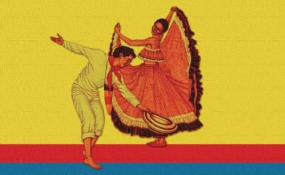
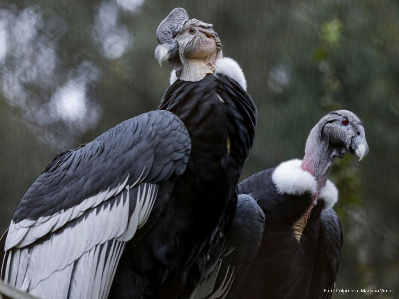
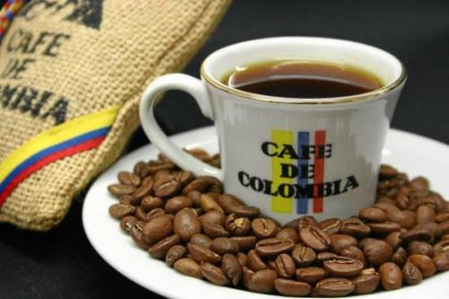

Sobre los colores patrios —amarillo, azul y rojo— que vibran de fondo, una pareja danza con gracia y
fervor la cumbia, alma y corazón del folclor colombiano. Ella, ataviada con un amplio y colorido vestido
que ondea al compás del movimiento, alza los brazos revelando la alegría que se transmite de generación
en generación. Él, con porte elegante y pañuelo tricolor al cuello, sostiene en su mano el sombrero
vueltiao, símbolo por excelencia de nuestra tierra, y extiende el brazo en un gesto de gallardía y
devoción. Juntos encarnan la mezcla de raíces indígenas, africanas y europeas que dio vida a esta danza,
expresión pura de nuestra identidad, unión y orgullo nacional.

Majestuosos y imponentes, estos cóndores surcan con su espíritu los cielos de los Andes colombianos,
llevando consigo la grandeza y la libertad de nuestra tierra. Su presencia evoca la fuerza de las
montañas, la inmensidad de nuestros territorios y el alma indomable que ha sido cantada en versos,
canciones y tradiciones a lo largo de nuestra historia. Considerado mensajero de los pueblos
originarios y símbolo patrio por excelencia, el cóndor es musa del folclore y la poesía: nos
recuerda nuestra herencia, nuestra altura y el espíritu libre que distingue al pueblo colombiano.

Granos dorados y aromáticos que encierran en su interior la calidez, el esfuerzo y el cariño de
miles de familias campesinas, guardianas de una tradición que ha recorrido el mundo entero. Una
taza humeante de Café de Colombia es mucho más que una bebida: es el aroma de nuestros valles,
el fruto de tierras bendecidas por un clima y suelo sin igual, y símbolo de la laboriosidad y la
riqueza de nuestra cultura. Cada sorbo lleva consigo historias, cantos y vivencias de nuestros
pueblos, siendo un tesoro que enaltece nuestra tierra y nos llena de legítimo orgullo
colombiano.
|